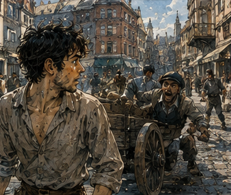
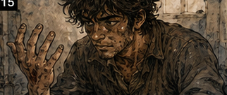
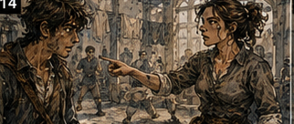

Rusk handed me a list. I smiled. He took it back.
"No."
"What?"
"Don't do that."
"Do what?"
"Look happy."
"I am allowed to enjoy my work."
"Not this work." I reached for the list. He held it above my hand. Rusk was taller than me by perhaps an inch.
At nineteen. Future Greg would have found that irrelevant. Present Greg found it irritating.
"Antonius finally put me on collections."
"Rent."
"Debt."
"Rent."
"Money owed after an agreed date is debt." Rusk considered this.
"You're going to make today long."
"Almost certainly." He gave me the list.
Three names. Three addresses. Amounts. No explanation. I read them once. Then again. The second name bothered me. Merren. Not the given name. Surname. Merren. I knew that name. Maybe. I stopped walking. Rusk continued three steps before noticing.
"What?"
"Merren."
"What about him?"
"Her."
"Her what?"
"Who is she?" Rusk took the list from me and looked as if the answer might have appeared since yesterday.
"Selka Merren. Weaver."
"Merren Textiles?"
"No."
"Merren & Sons?"
"No."
"Merren military cloth?"
"No idea."
That was something. Not enough. The name had weight. Not Antonius weight. Different. Commercial. Blue banners. Uniform contracts? Tent canvas?
No.
A line of waterproof expedition cloth used in the northern campaigns. Was that Merren? Maybe Merrow. Merren had been... Fuck. Forty years was too much life. People imagined memory as a library. It was not. It was a city after an evacuation. Everything still technically existed somewhere, but good luck finding the correct house.
"Do you know her?" Rusk asked.
"No."
"You stopped like you knew her."
"I know the name."
"From where?"
"Not enough information yet." He handed the list back.
"I hate when you say that."
"That's because it means I'm thinking."
"No. It's because it means you don't know and want credit for almost knowing."
That was viciously accurate. I disliked Rusk. We walked. The first debtor was boring. This was refreshing. A baker owed Antonius four silver and six copper for storage rent. He paid three silver, complained about flour prices, promised the rest in two days, and looked exactly like a man who would pay the rest in two days. I tried to ask about his supplier. Rusk elbowed me.
Hard.
"What?"
"Money."
"We have the money."
"We have some money."
"His flour costs are unstable."
"Not our flour."
"Everything is eventually our flour." Rusk stared. I heard it after saying it.
"That sounded better in my head."
"No, it didn't."
Probably not. We left. The second address belonged to Selka Merren. Her workshop occupied the ground floor of a narrow building squeezed between a cobbler and a shop selling cheap devotional charms. I knew immediately that something was wrong. Not because of future knowledge. Because nobody was working. A weaving shop without noise was like a tavern without lies.
Possible. Suspicious. The front door was open. Inside were two looms. One empty. One threaded but still. Shelves held folded cloth in muted colors. A woman stood at a cutting table with both hands planted flat against the wood. Mid-thirties. Strong forearms. Dark hair tied back badly. She looked at Rusk. Then at me. Her eyes stopped on the list in my hand.
"Vale?" Rusk nodded.
"Nine silver, three copper." She closed her eyes.
Not surprise. Expected.
"Tomorrow."
"Today," Rusk said.
"I know what day it is."
"Good."
"I'll have it tomorrow." Rusk waited.
Selka waited. I looked around. Nine silver. Not enormous. Enough to matter. Her shelves had inventory. Not much. Good cloth. I thought. Maybe. I knew nothing about cloth. Important. Do not become a textile expert because cloth looked expensive. One loom idle. Why? No worker? Broken?
No.
The shuttle sat nearby. Warp threaded. Could run. The second loom had a half-finished length of dark blue fabric. Blue. My brain immediately tried to connect it to the Merren name. Stop. Present evidence.
"What happened?" I asked.
Selka looked at me.
"Who are you?"
"Greg." Rusk said, "Debtor." I looked at him.
"Employee."
"Debtor."
"Temporary employee."
Selka's mouth moved slightly.
Good.
Not hostile yet.
"What happened?" I repeated.
"Nothing."
Lie. Not sophisticated. Pride. I looked at the idle loom.
"Worker leave?"
Her expression changed. Tiny.
"None of your business."
"Broken order?"
Nothing.
"Supplier?"
Nothing.
"Buyer?"
There. Not much. Enough.
"Buyer didn't pay," I said. Rusk exhaled through his nose. Selka looked at him.
"Does he always do this?"
"Unfortunately."
"How late?" I asked. She crossed her arms.
"We owe Vale. Not my customers."
"Your customer currently owes Antonius by proxy."
"Greg," Rusk said.
"Money."
"I am discussing money."
"Collect it."
Selka looked between us. Then laughed once despite herself. Useful. People were easier after they laughed. Usually. Sometimes laughter meant they had decided to stab you. Context.
"Three days," she said.
"Buyer is three days late?" She nodded.
"How much?"
"No."
"More than nine silver?"
Silence.
Yes.
"How much more?"
"Greg." Rusk again.
Fine. Constraint. Nine silver, three copper. Collect. I looked at the shelves.
"If you sold enough stock today, could you pay?"
Selka's jaw tightened.
"At what price?"
Ah. There. Not cannot sell. Will not sell.
"Bad market?"
"No."
"Then why?"
"Because that cloth is already sold."
"To the late buyer."
"Some."
"And the rest?" She looked at me as if deciding how much irritation I was worth.
"Orders."
"Deposits?"
"Yes."
"So selling it twice would create a larger problem."
"Congratulations."
"Thank you." Rusk shifted beside me. He was getting impatient. I could feel it.
Nine silver. Today. Selka had receivables. Inventory committed. Two looms, one idle. Why idle? I looked again.
"Where's your second weaver?"
Her face closed. Not worker. Family?
"Hand."
She nodded toward the back. A young man sat on a stool near a washbasin. I had missed him because the shelves blocked most of his body. His right hand was wrapped. Burn? Cut? Crushed fingers? He saw me looking and raised the bandaged hand.
"Shuttle split."
Selka said, "My brother." There. Production loss. Late buyer. Cash trapped. One worker down. The business was not collapsing. It had been hit from three directions at once. My mind opened. Replace labor. Short-term subcontracting. Sell receivable. Discount invoice. Collateralize finished goods. Renegotiate supplier. Advance against buyer. Use Antonius as factoring,
No.
Too many. Nine silver. Today.
"What can you pay now?" I asked.
Selka looked annoyed by the question.
"Three."
"Silver?"
"Yes." Rusk said, "Nine."
"I heard you."
"Then collect nine."
"She doesn't have nine."
"Not our problem."
That phrase. Not our problem. I looked at him. He looked back. He was not being cruel. Not exactly. His job had edges. Collect the amount. My brain wanted to widen the edges until they contained the whole workshop. That was the trap. One problem. Nine silver. Today. What assets could bridge six? Finished cloth was committed. Tools?
No.
Loom? Too destructive. Receivable? Maybe.
"Who is the buyer?"
Selka hesitated.
"Jast."
"Who is Jast?"
"Merchant." Rusk said, "I know him."
Good.
"Does he pay?" Rusk shrugged.
"Eventually."
"How eventually?"
"Depends who asks."
Interesting.
"How much does he owe her?"
Selka said, "Fourteen." There. Enough.
"Due three days ago."
"Yes."
"Written?" She pointed toward a ledger.
"Greg," Rusk warned. I held up a hand.
"One minute." He looked like he wanted to break the hand. I went to the ledger. Selka blocked me.
Reasonable.
"Show Rusk." She did. He read the entry.
Fourteen silver. Delivery accepted. Payment due. Signed.
Good.
I looked at Rusk.
"Antonius buys debts?"
"No."
"He lends against them?"
"Sometimes."
"At what rate?"
Rusk's eyes narrowed.
"No."
"Useful answer."
"You're not lending Antonius's money."
"I haven't proposed anything."
"You have the face."
Everyone knew my faces now. Unfortunate. Selka watched us.
"What are you proposing?"
Good question. I did not know yet. That was fine. Think smaller. Antonius was owed nine. Selka was owed fourteen by someone Rusk knew. Could we collect from Jast instead? Assignment? Maybe not legally transferable without paperwork. But Rusk could accompany.
No.
Today. We could take Selka's receivable as collateral against an extension. Antonius would still be owed. Risk shifts. Would Antonius accept? Probably if the debtor was stronger than Selka. Was Jast stronger? Rusk knew him.
"Would you rather be owed fourteen by Jast or six by her?" Rusk stared.
"Neither. I'd rather have nine."
"That wasn't the question."
"Antonius is owed nine."
"Three now. Six secured by fourteen."
"You're doing it."
"Doing what?"
"Making the problem bigger." I stopped. He was right. I looked at Selka. Three silver now.
Six missing. What could produce six today without damaging her business? The answer might simply be nothing. I hated that. Constraints did not guarantee elegant solutions. Sometimes the wall was a wall. Selka said, quieter, "I can sell one order."
"No," I said. She looked at me.
"If you break a prepaid order, you convert one late payment into two angry customers."
"Then what?" I looked at the idle loom. Could I weave?
No.
Absolutely not. Could Rusk? The thought made me smile. He saw it.
"No."
"I didn't ask."
"No."
Fair. Could the brother work one-handed? Probably poorly. Could someone else? Hire labor. Costs money. Could I find a weaver today? Maybe. Not six silver today. Stop solving her business. Money. I looked at the cloth on the active loom.
"What's that worth unfinished?"
Selka frowned.
"Why?"
"Answer."
"Maybe eight."
"Finished?"
"Twelve. Fourteen if the dye holds."
"How long to finish?"
"Day and a half."
"With him?" She glanced at her brother.
"Two days."
There. Collateral that increased in value if left with the debtor. Interesting.
"We take a lien on that piece." Rusk said, "A what?"
"Security. Not possession."
"I know what a lien is."
"Excellent."
"Antonius said collect."
"Three silver collected. Six secured against cloth worth at least eight unfinished and twelve finished. Due in three days, same day Jast should have paid or shortly after. If she defaults, Antonius takes the cloth."
Selka's face changed. Anger.
"You don't take it now."
"No."
"Greg," Rusk said. I ignored him.
"You finish it. You keep working. You get your buyer money. Antonius gets paid. If you don't pay, he takes this piece, not the committed stock."
Selka looked at the blue cloth. Her brother looked at her. Rusk looked at me. I could feel the mistake potential. I was negotiating terms without authority. Again. That part was becoming a habit.
"Three days," Selka said.
"Two," Rusk said. She shook her head.
"Jast said tomorrow."
"Which means maybe two," Rusk said.
Good.
He was participating.
"Two days," I said. "Three silver now. Six plus whatever Antonius decides the extension costs."
Selka's eyes narrowed.
"How much?" I looked at Rusk. He smiled.
Bastard.
"Not my money," he said.
Correct. I nearly invented a rate. Stopped.
"Antonius decides."
That felt unpleasantly mature. Selka considered. Then nodded. We wrote it. Rusk knew the language. I did not. Another useful distinction. I understood the structure. He understood the actual agreement. We took three silver. No cloth. No broken orders. No loom. Outside, I felt excellent. Rusk did not.
"You lent his money."
"I secured his existing loan."
"You extended it."
"By two days."
"Without asking."
"With collateral."
"Without asking."
"He'll like it." Rusk looked at me.
"That's what worries me."
We walked toward the third address. I looked back once. Merren. The name still bothered me. I would check later. Not now. That was growth. Possibly. The third debtor lived above a cooper's shop. His name was Dav Ors. He owed Antonius five silver. The door was locked. Rusk knocked. Nothing. Again. Nothing. Neighbor said Dav had left yesterday with a pack. Destination unknown.
No collateral. No person. No problem with edges. Just absence. I hated it immediately.
"Dock?" I asked. Rusk shrugged.
"South gate?"
"Maybe."
"Family?"
"No idea."
"Trade?"
"Broker."
"Of what?"
"Whatever pays."
Useless. My brain generated twelve paths. Check inns. Gate records. Carters. Guild. Dock. Other lenders. Mistress. Family. Gambling rooms. Pawnshops. None had priority. No constraints. I stood in the hallway. Rusk smiled.
"What?"
"Nothing."
"You look unhappy."
"I am thinking."
"You're lost."
"I am not lost."
"Where is he?"
"Not enough information yet." Rusk laughed. I hated Rusk.
We searched the room after the landlord opened it. Legally? Probably. I did not ask. Nothing useful. A cup. Blanket. Two shirts. Old receipts. No hidden ledger. No dramatic clue. No conveniently dropped map. People were inconsiderate. I found a torn scrap with a merchant seal. My pulse rose. Then Rusk identified it as a fishmonger receipt. I put it down.
"Extremely valuable?" he asked.
"Fuck you."
We left with nothing. That failure stayed with me all the way back. Not because five silver mattered more than the Merren account. Because I could not get purchase on it. No person to read. No system visible. No bounded problem. Only possibilities. I could feel myself wanting to spend the rest of the day finding Dav Ors simply because the uncertainty offended me. That would be stupid.
Probably. Maybe he had more debt. Maybe finding him exposed a network. Maybe,
No.
Antonius had asked for money. We had failed to collect five. Report it. Move on. I disliked this lesson and therefore suspected it might be useful. Antonius was at the warehouse when we returned. He looked at Rusk. Rusk put the coins on the desk.
"First: three silver, balance promised in two days." Antonius nodded.
"Second?"
"Three silver." Antonius looked at the list.
"She owes nine."
"Yes."
His eyes moved to me. I smiled. He closed his eyes.
"Greg."
"Before you react, "
"No."
"You don't know what happened."
"I know your face." Rusk leaned against the wall.
Traitor. Antonius opened his eyes.
"What did he do?" Rusk said, "Lent your money."
"I did not lend anything." Antonius looked at me.
"What did you do?"
"Collected three, secured the remaining six against an unfinished cloth order worth at least eight as-is and likely twelve to fourteen finished, extended two days, with extension terms to be set by you."
Silence. Antonius looked at Rusk. Rusk nodded.
"That's what he did." Antonius looked back at me.
"You extended my loan."
"Technically the loan was already extended by her inability to pay."
"No."
"Practically."
"No."
"Economically."
"Greg."
"Fine." He rubbed his face.
"Why?"
"Because taking the cloth she had available would force her to break prepaid orders. Taking the loom damages production. The unfinished piece isn't committed, appreciates with labor she supplies, and covers the balance. Her buyer owes her fourteen and is three days late."
"Who?"
"Jast."
Antonius's hand stopped.
"You know Jast?" I asked.
"Yes."
"Does he pay?"
"Eventually." Rusk made a small sound. I pointed at him.
"See?" Antonius ignored me.
"How long?"
"Two days."
"She offered three."
"Rusk got two." Antonius looked at Rusk. Rusk shrugged.
"I was there."
"That's reassuring."
"It should be." Antonius looked at the agreement.
Read it. Again. Then set it down.
"Interest?"
"Yours to decide."
His eyes came up. That surprised him.
Good.
I was learning. Slowly. Painfully.
"Why didn't you set it?"
"Not my money." Rusk laughed. Antonius looked at him.
"He said that?"
"Eventually."
"Progress."
"I thought so." I disliked both of them. Antonius tapped the paper.
"You still changed my terms without permission."
"Yes."
"Don't."
"Even when, "
"Don't." I opened my mouth. He raised one finger.
Constraint. Don't. I closed it. Antonius watched that happen. Interesting.
"Third?" he asked.
"Gone," Rusk said.
Antonius's expression changed.
"Ors?"
"Yesterday."
"Where?"
"No idea." Antonius looked at me. I hated what came next.
"No idea," I said. He smiled.
"Good."
"Why does everyone enjoy that?"
"Because it happens so rarely."
"I say I don't know things."
"No. You say 'not enough information yet.'"
"That's more accurate."
"It's longer."
"Accuracy often is." Antonius leaned back.
"What did you find?"
"Nothing useful."
"Where would you look?"
There. Open field. I felt the branches. Dock. Gates. Carters. Other creditors. Guild. Associates. Merchants. Pawnshops. Gambling rooms. Maybe Antonius expected an answer. I could give him six. Instead I said, "Depends what finding him is worth." Antonius went still. Rusk looked at me. I continued.
"He owes five silver. I could spend two days finding him and cost you more than five silver in labor while ignoring other work. Unless there's a reason he matters beyond the debt, I'd flag him, tell your people to watch the obvious exits and places he uses, and stop."
Antonius's face became unreadable. That was annoying.
"What?" I asked.
"Nothing."
"That was the right answer."
"Was it?"
"Yes."
"Then why ask?"
"Because yesterday you would have spent two days finding him." I thought about it.
"Probably."
"Why?"
"Because he left."
"That's not a reason."
"It feels like one." Antonius smiled.
"That's your problem."
"One of them." He looked down at the Merren agreement again. Then at the three silver.
"You collected less than I sent you for."
"Yes."
"You changed terms."
"Yes."
"You failed to find Ors."
"Yes."
"So." He waited. I knew what he wanted.
"You want me to say I failed."
"I want to know what you think." I looked at the coins. First debtor: partial payment, likely fine. Merren: partial plus secured extension.
Ors: gone. Numerically? Bad day. Structurally? Maybe good.
"I think we preserved a debtor who is worth more operating than liquidated, collected what was available without damaging her ability to pay the rest, and didn't waste a day chasing five silver because my pride dislikes unanswered questions." Rusk looked at me. Antonius looked at me. I added, "So obviously I was magnificent." Antonius laughed.
Good.
Tension released. Mostly. Then he said, "Merren." I looked at him.
"What about her?"
"You reacted to the name." Rusk had told him.
Traitor.
"I've heard it."
"Where?"
"Can't remember."
"Useful."
"It will come back."
"Maybe."
That word from Antonius was becoming irritating. Maybe. He had learned exactly where to put it. I leaned against the desk.
"What do you know about her?"
"Good weaver. Bad at collecting what she's owed. Better at cloth than business."
"Family?"
"Brother. Mother outside the city."
"How long here?"
"Seven years."
"Any children?" Antonius stared.
"What?"
"Could matter."
"To what?" I did not know.
Future Merren. Maybe the famous name belonged to a child. Maybe apprentice. Maybe company purchaser. Maybe Selka herself.
"I don't know." Antonius smiled again. I regretted everything.
"How much do you remember about people?" he asked.
My body went still before my face did. Danger. Not because he knew. Because the question was too close to a different question.
"What does that mean?"
"You hear names and act like somebody rang a bell in another room."
That was an excellent description. I disliked him for it.
"Good memory."
"No."
"No?"
"You have a terrible memory."
"Selective."
"You forgot Toma's name twice."
"I did not."
"You called him Tomas yesterday."
Fuck.
"Close."
"You remember things that haven't happened to you and forget things that happened yesterday."
Silence. Rusk looked between us. Antonius smiled slightly. Not accusation. Curiosity. I could feel the opening. Lie. I stepped into it.
"I remember things that matter."
Antonius's smile faded.
"How do you know what matters?"
That was the question. Not how do you know the future. How do you know what matters? Because I had lived long enough to watch importance reveal itself. Because late-life Greg had met thousands of people. Tens of thousands? Names. Faces. Kings. Guildmasters. Warriors. Mages. Merchants. Priests. Criminals. Lovers. Enemies. People who saved my life. People whose lives I ruined. Most were gone from my memory except in pieces. And yet Antonius Vale remained.
Not perfectly. That was the unsettling part. I remembered his name. His gravity.
The sense that when Antonius moved, other things moved around him. I remembered people caring what he thought. I remembered being careful around him. I remembered enough to know he had held power. But I could not reconstruct the whole machine. Which meant something. S-class Greg had not needed to remember nobodies. That sounded cruel. It was also true. By the end, too many important people had passed through my life for importance alone to preserve them.
If I remembered Antonius after forty years of wars and dungeons and lovers and funerals and mistakes, Antonius had been good. Powerful. Dangerous. Useful. Something. And if I remembered the name while forgetting half of what the man actually did, perhaps he had mattered even more than the fragments suggested. Present Antonius was watching me. I had been silent too long.
"Pattern recognition," I said. He waited.
"That's bullshit."
"Mostly." Rusk laughed. Antonius did not. He looked at me for another moment, then let it go. That was almost worse.
"Tomorrow," he said, "you're with me." I blinked.
"Doing what?"
"Work."
"What kind?"
"Mine."
"That is deliberately vague."
"Yes."
"Collections?"
"No."
"Loans?"
"Maybe."
"Warehouse?"
"Maybe."
"Meeting someone?"
"Greg."
"What?"
"Tomorrow." I hated surprises.
Actually, no. I hated other people's surprises. My own were excellent.
"Fine." Antonius looked at Rusk.
"Take the cloth agreement to Sella." I straightened.
"Sella?"
"Guild clerk."
"I know who she is."
His eyes moved back to me.
Right.
Too fast.
"Why Sella?"
"Witness."
"She handles private debt?"
"Sometimes."
Future Sella again. Institutional importance. Rules. Records. Systems. I wanted to go. Antonius saw that.
"No."
"I didn't ask."
"You were going to."
"I could learn, "
"No."
"You're wasting, " He pointed toward the door. I left. Rusk followed.
Outside, I looked back through the warehouse window. Antonius was already reading something else. Work. Always work. I thought about Merren. Then Sella. Then Orlan Tere. Then Antonius.
Names surviving where details did not. Maybe memory was not merely unreliable. Maybe it was weighted. Not by what had been objectively important. By what had mattered to me. That was worse. Because then forgetting someone meant nothing simple. And remembering Antonius meant something I did not yet understand. I walked three streets before realizing Rusk was still beside me.
"Why are you following me?"
"I'm going this way."
"Oh." He looked at me.
"You really do disappear."
"What?"
"In your head."
"I was thinking."
"You stopped avoiding carts." I looked behind us. A carter had apparently sworn at me. I had not heard him.

"Reasonable." Rusk shook his head. At the next corner he turned away.
"Merren pays in two days," I called. He raised a hand.
"If she doesn't?"
"She will." He stopped.
Looked back. I corrected myself.
"Probably." Rusk smiled.
Progress. I went to Hessa. Late. Again. She looked at me.
"No."
"What?"
"You have the face."
Everyone. Everyone knew the fucking face.
"What face?"
"The one where your body is here and you are somewhere else."
That stopped me. Rusk had just said almost the same thing. I looked down at my hands. Dust in the creases from the warehouse. Ink on one finger from Selka's agreement. A shallow sword blister reopening near my thumb. Three different lives on one hand.

"Greg." I looked up. Hessa pointed to the mat.

"Here."
One word. Constraint. I stepped onto the mat. Breathed. For the next hour, I was only the student. That was easier. Afterward I went home instead of gambling. That was harder. I sat on the bed. The room was still cheap. My sword leaned against the wall. My notes covered the table.
SHALE.
TERE.
MANA.
WARRIOR.
DEBT.
ANTONIUS.
MERRREN.
I stared. Then crossed out the extra R.
MERREN.
Better.
Under it I wrote:
WHY DO I KNOW THIS NAME?
No answer. Under ANTONIUS I wrote:
WHY DO I REMEMBER HIM?
That one bothered me more. I almost started listing possibilities. Political leverage. Financial network. War financing. Guild influence. Criminal organization. Merchant coalition. Something with Konia? Maybe. My pen hovered. Then I remembered Ors. Open field. Branches.
No.
I drew a box around tomorrow.
ANTONIUS.
One constraint. See what happens. I put the pen down. Five minutes later I picked it back up and wrote:
MERRREN TEXTILES?
I stared.
"Fuck."
Crossed out the extra R again. Then went to bed.